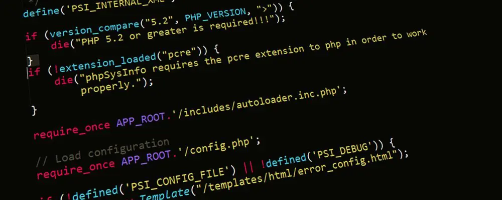
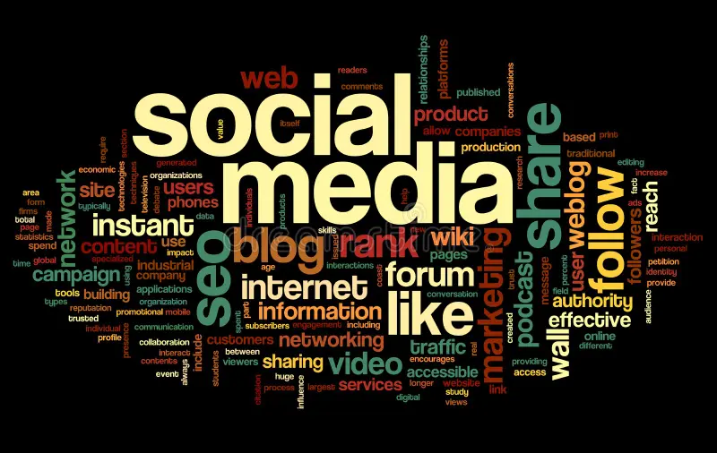
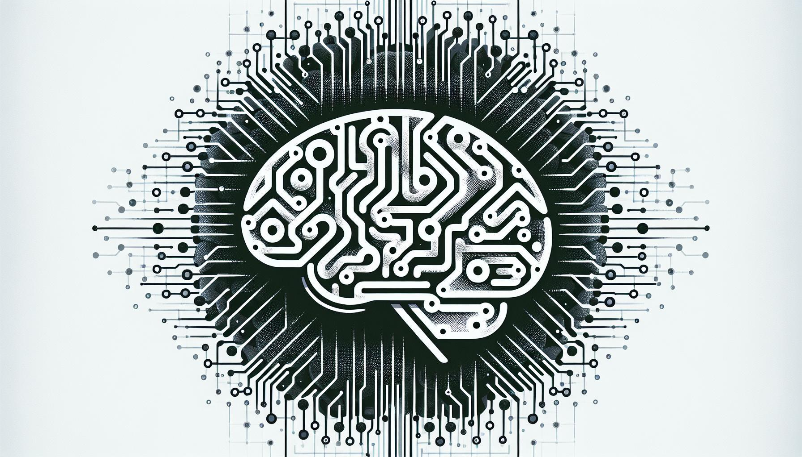
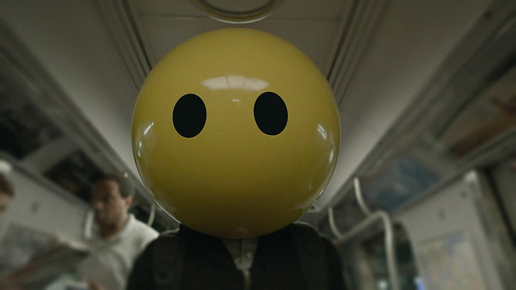

Przyszłość prawa autorskiego w erze cyfrowej
Autorzy: Yevhenii Zhelieznov, Oleksandr Zhelieznov, Arsenii Siversky
Klasa: 2c
Trendy, wyzwania i reformy prawa autorskiego w związku z rozwojem technologii cyfrowych

Czym jest prawo autorskie
Prawo autorskie chroni:
- utwory literackie
- muzykę
- filmy
- fotografie
- programy komputerowe
- treści cyfrowe
Autor posiada:
- prawa osobiste
- prawa majątkowe
Najważniejsze trendy
1 Streaming i subskrypcje
Platformy cyfrowe zmieniły sposób korzystania z muzyki i filmów
2 User Generated Content
- memy
- remixy
- short videos
- podcasty
3 Rozwój AI
- teksty
- obrazy
- muzyka
- kod komputerowy
Piractwo cyfrowe
Mimo rozwoju legalnych platform piractwo nadal istnieje
- nielegalne pobieranie filmów
- udostępnianie muzyki
- kopiowanie e-booków
- nieautoryzowane transmisje sportowe
Wyzwania:
- anonimowość użytkowników
- międzynarodowy charakter internetu
- trudność egzekwowania prawa
Media społecznościowe
Platformy społecznościowe stały się głównym miejscem dystrybucji treści
- naruszenia praw autorskich
- repostowanie bez zgody
- monetyzacja cudzych materiałów
- automatyczne algorytmy moderacji

Coraz większą rolę odgrywają systemy wykrywania naruszeń, np. Content ID
Reformy prawa autorskiego
- większa odpowiedzialność platform internetowych
- ochrona twórców cyfrowych
- regulacje dotyczące AI
- uproszczenie licencjonowania treści

Celem reform jest dostosowanie prawa do realiów cyfrowych
Przyszłość prawa autorskiego
- globalne standardy ochrony cyfrowej
- automatyczne systemy zarządzania prawami
- wykorzystanie blockchain do potwierdzania autorstwa
Prawo autorskie będzie musiało być bardziej elastyczne i międzynarodowe
Wnioski
Rozwój technologii cyfrowych zmienia sposób tworzenia i korzystania z kultury
Największe wyzwania:
- ochrona twórców
- walka z piractwem
- regulacja sztucznej inteligencji
- zachowanie równowagi między dostępem do wiedzy a ochroną praw
